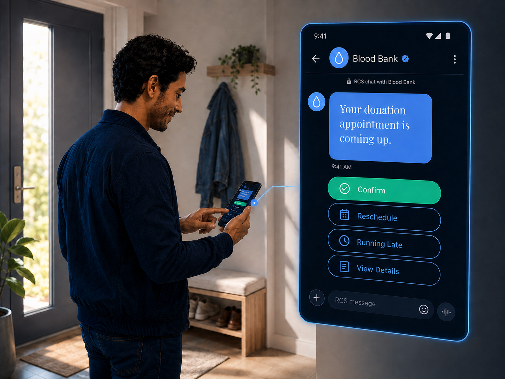
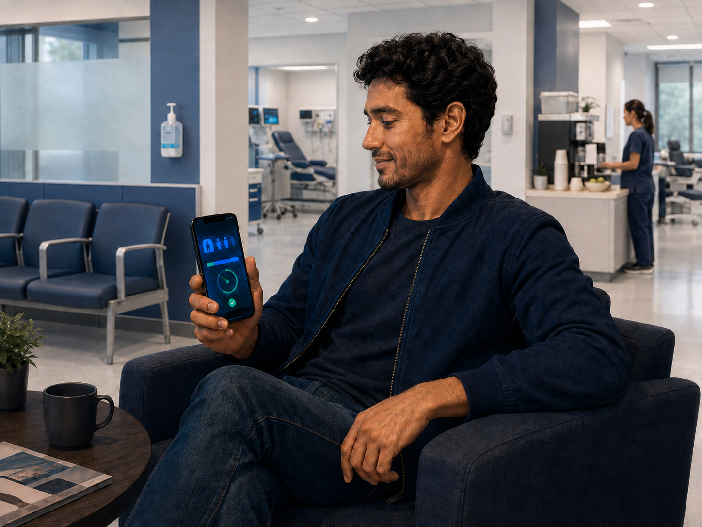
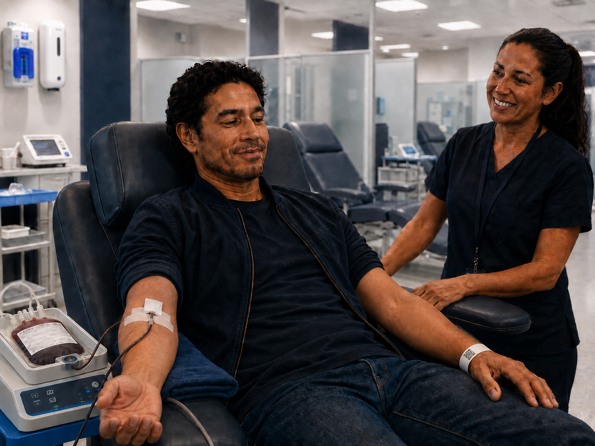
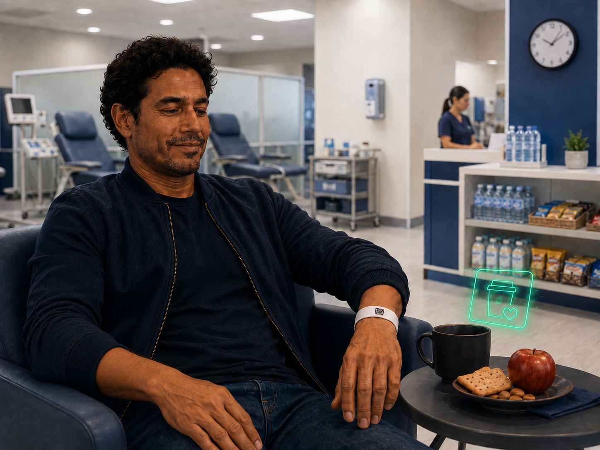

A branded text, not an app download
The donor gets a text with a link — tap to confirm, reschedule, or let you know they're running late. No app, no login, no friction. Works on any phone.
Walk in and you're checked in
Donors with a phone scan a poster QR and confirm — they're in the queue instantly. Donors without a phone get a wristband after screening that tracks their journey the same way. Either path, same experience.

An honest wait, not a guessing game
Donors with cell phone see a live, self-updating wait range, realistic. Wristband only donors stay visible in the queue and will be alerted by staff or Donor Queue Status Boards.

One notification when it's actually your turn
Pulse only sends this when the donor is cleared and a spot is genuinely ready — high confidence, no false calls. The donor walks up to something, not to a second wait.

One tap — bed freed, timer started, perk unlocked
At the snack area, the donor scans their wristband or taps on their phone. That single gesture frees their donation spot, starts the center's observation timer, and reveals a sponsor perk and a quick satisfaction survey.
The visit ends, the care doesn't.
Thank-you, milestone recognition, and an easy path to rebook. Wellness check-ins go out by text — a simple "how are you feeling?" If anything's off, your team gets a callback prompt. Every touchpoint is documented.
One loop. Every donor. Documented.